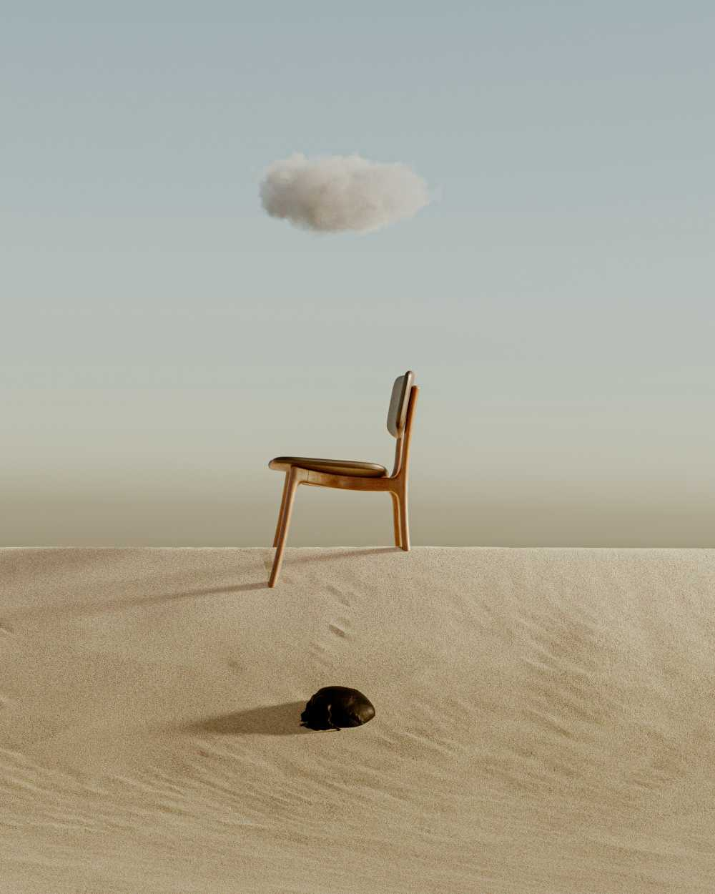

Stranger Things
Discover a collection of strange digital art that will challenge how you perceive life, the universe, and everything.🤯

Inspired by creative minds like Hideo Kojima, the artist offers a collection of otherwordly art that makes us contemplate about our place in the cosmos, where we are heading, and if the glow cloud of Night Vale is friend or foe.☠Check out more of their awesome art here.

What is 'fine art'? What is 'chair art'?🪑 Who sat in that chair and what did the cloud do with them? The artist traverse dimensions into the ethereal space of the unconscious consciousness. Explore more of their mindbending art here.
Imagine a cow as a sphere.🮠A spherical cow is the quintessential cow. So why then are not cows, and all matter for that matter, spheres? The artist gives us a lesson in entropy and the second law of thermodynamics with their mind-blowing geometries. Enjoy their digital art here.